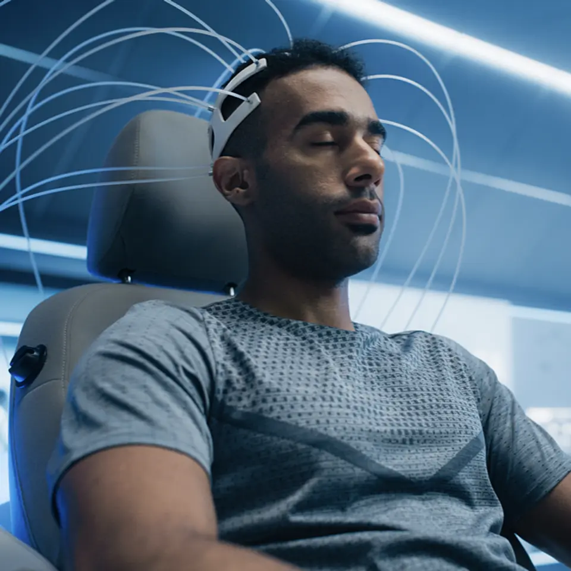
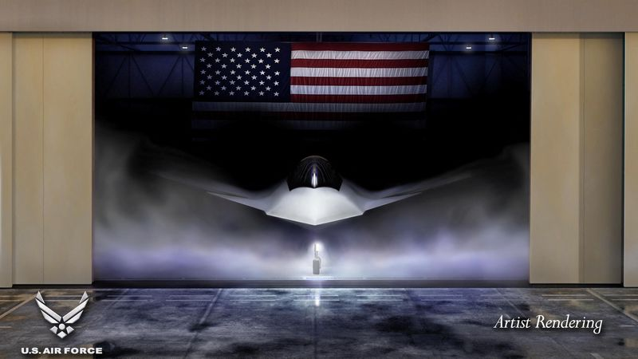
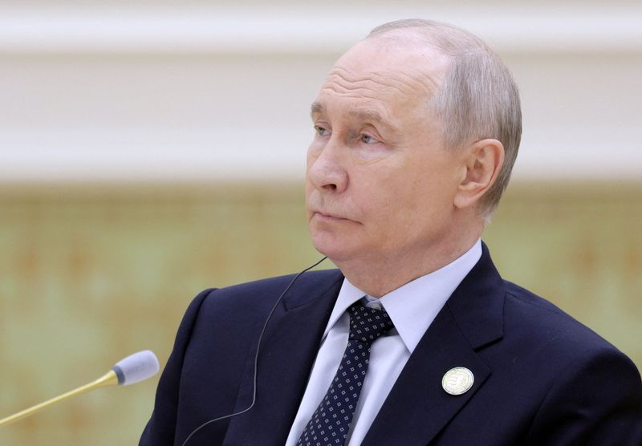

01【闇深】カジュアル化した美容整形の「危険な末路」
発行日時：2026年10月10日 05:30 JST
あなたに関係ありそうな理由
サービスの利用拡大を考えるとき、便利さや選択肢の増加だけでなく、受け手の心理や長期的な影響まで捉える視点になります。
概要
Netflixドラマ『ダウンタイム』が話題になる背景として、記事は美容医療が「隠れて受けるもの」から日常会話に上るものへ変わった状況を描く。シミ取りやハイフを受ける人が増え、男性にもスキンケアや筋トレを含む美容意識が広がっている。オンライン会議で自分の顔を見続ける経験や、SNSで加工された画像に接する時間も、容姿を意識させる要因として挙げられる。施術を受けること自体を善悪で分けるのではなく、本人の選択がどのような環境で作られているのかを見る記事である。
取材に答えた公認心理師の大村美菜子氏は、2024年の調査で「美容医療に関心がある、または経験がある」と答えた小学生が約25％、大学生が40％超だったと紹介する。小学生でも脱毛、歯列矯正、肌荒れ治療に関心を持つ例があり、2％ほどは目や鼻への施術を経験していたという。記事は、容姿へのこだわりがあっても日常生活を送れる状態と、苦痛が強く生活に支障が出る身体醜形症を区別する。SNS、人間関係、社会からの見られ方が重なると、前者が後者に移行し得るため、特に思春期の受け止め方が重要になる。
美容医療には、強いコンプレックスを抱える人が自信を取り戻す助けになる面がある。一方で、美しくあり続けなければならないという圧力が、それまで気にしていなかった部分への不安を増やす面もある。記事は、この二つを同じ話にしない。選択肢が増えたことと、周囲の評価に追われる状態を減らすことは別の課題であり、学校教育や家庭・友人関係を含めて考える必要があると結ぶ。施術の技術や広告だけでなく、受ける前に立ち止まれる関係性が問われている。
表示コメントでは、2025年の美容医療市場は6,440億円だが、伸び率は前年の6.2％増から2.1％増へ鈍化した一方、国民生活センターへの相談は2022年度の3,798件から2024年度の1万717件へ増えたという指摘があった。現場の医師からは、適応がない場合や施術で解決しない悩みなら断り、リスクとダウンタイムを先に伝えるべきだという声も出た。今後は市場規模だけでなく、相談件数、説明の質、若年層が自分の意思で選べる環境がどう変わるかを見たい。
仕事や会話で使える一言
「選択肢を増やすことと、選ばない判断ができる環境をつくることは、分けて考えたいですね。」
NewsPicks原文を読む
02【過熱】著名投資家が娘のために巨額を投じる「脳デバイス」
発行日時：2026年10月10日 05:30 JST

あなたに関係ありそうな理由
新技術を評価するときは、資金調達の大きさだけでなく、利用者の安全、保守、承認の段階まで別々に確認する必要があります。
概要
脳とコンピューターをつなぐBCI（ブレイン・コンピューター・インターフェース）に、投資資金が集まっている。記事が取り上げる米プレシジョン・ニューロサイエンスは9月24日、2億5,000万ドルを調達し、企業価値は10億ドル超になった。BCIは脳の神経信号を外部機器へ伝え、発話やロボット義肢の操作を助ける技術である。重い神経疾患や障害がある人の意思疎通と日常動作を支える可能性が期待される一方、多額の出資だけで医療現場に届くわけではない。
今回の資金調達には投資家ビル・アックマン氏が深く関わる。娘が脳出血で昏睡状態になった経験をきっかけに、妻と脳研究機関を設立し、その資金の一部から同社に出資した。プレシジョンは、1024個の電極を持つ薄いフィルムを大脳皮質の表面に置く「レイヤー7」を開発する。脳の表面下に電極を入れるニューラリンクと比べ、侵襲性を抑える設計だ。記事は、表面に近い方式は感染や瘢痕化のリスクを小さくし得る一方、脳内に近い方式は信号をより高精度に読める可能性があると説明する。
実用化には時間がかかる。プレシジョンは2025年、最長30日間の埋め込み機器について米食品医薬品局の許可を得たが、恒久的な機器として承認を得るには数年を要する見通しだ。これまで100人超に一時的な埋め込みを行い、18の医療機関グループと研究提携を結んでいる。ニューラリンク、シンクロン、マージ・ラボなど競合も資金を集める。技術競争は、装着時の精度だけでなく、長期使用の安全性、交換・修理、医療機関での運用を含むものになる。
表示コメントでは、脳の表面か内部かという設計の違いを、精度とリスクの置き方の差として読む意見があった。壊れたときにどう交換するか、使う・使わないを本人が確実に選べるかも、普及の条件だという声もある。記事を読む際は、投資額や企業価値を進歩の代わりにしないことが大切だ。研究所がスタートアップ育成の役割も担うなか、研究成果を患者の利益につなげる説明も問われる。費用負担と倫理面の妥当性も含めて検討が要る。今後は恒久的な承認へ向けた臨床データ、利用者の選択権、導入後の保守まで、同じ速度で確かめたい。
仕事や会話で使える一言
「医療機器は性能だけでなく、長く安全に使い、必要なら止められる設計までが価値になりますね。」
NewsPicks原文を読む
03フランス「魔法のお金」依存、債務爆弾と化す
発行日時：2026年10月10日 05:20 JST
あなたに関係ありそうな理由
借り入れコストが上がる局面では、目先の資金繰りだけでなく、借り換え時期と安定した買い手を誰が担うかを見る必要があります。
概要
フランス国債の利回り上昇が、長年の財政運営と政治の行き詰まりを表面化させている。記事によると、フランスの10年債利回りは5％近くまで上がり、2002年以来の高水準となった。かつて危機の中心だったギリシャやイタリアを上回る借り入れコストになったという。2030年までに1兆ドル超の国債が満期を迎えるなか、来年には過去最大となる約3,800億ドル相当の国債発行も見込む。低金利で借りた債務を、金利が高い環境で借り換える局面に入った。
資金の出し手も変わった。フランス銀行は国債の買い入れをやめ、満期償還金の再投資も行わず保有を減らしている。日本の資産運用会社のような投資家も離れ、空白を埋めたヘッジファンドは相場急変で打撃を受けた。財務省の委託調査では、債務返済コストは2030年までに59％増える見通しで、債務残高はGDP比120％近い。利払いが防衛費を上回り得るという状況は、将来の投資や社会保障に回せる余地を狭める。
記事は原因を金利だけに求めない。フランスでは1974年以来、財政収支が均衡しておらず、黄色いベスト運動、コロナ禍、エネルギー危機への対応で支出が積み上がった。支援策の一部は危機後も残り、2023年には税収不足と支出見積もりの誤りが浮上した。財政再建を図る首相が議会で支持を失う一方、2027年の大統領選を意識する有力候補は支出拡大を掲げる。削減が必要でも、決められない政治構造が市場の懸念を強めている。
表示コメントでは、フランス国債の過半をユーロ圏外の外国が保有し、ユーロ制度の下では自国中央銀行による緊急買い入れに制約がある点が、日本との重要な違いとして示された。金利が成長率を上回れば、削減なしに債務負担は増え続ける。政府が情報をいつ開示し、歳出削減と成長投資の優先順位をどう合意できるかも、債券投資家の信認を左右する。一度損なわれた市場の信頼を回復できるかも重要になる。国民への説明力と、財政再建策の実行力も問われる。フランスの事例は、債務額だけでなく、満期の集中、保有者、中央銀行、選挙の関係まで見なければ財政の持続性を読めないことを教える。今後は予算協議と国債の消化状況を追いたい。
仕事や会話で使える一言
「債務は残高だけでなく、いつ借り換えるか、誰が買い続けるかで重さが変わりますね。」
NewsPicks原文を読む
04アングル：巨額損失に悩むボーイング防衛部門に光明、次世代戦闘機の連続受注で「向こう半世紀の覇権」へ
発行日時：2026年10月10日 07:54 JST

あなたに関係ありそうな理由
大型案件では、受注した事実と採算が出ることを分け、設計変更や保守まで含めた契約条件を確認する必要があります。
概要
ボーイングは9月29日、米海軍の次世代ステルス戦闘機F/A-XXの開発企業に選ばれた。2025年3月には米空軍の新型ステルス戦闘機F-47の開発も獲得しており、第6世代戦闘機の主要契約を2年続けて得たことになる。F/A-XXの初期開発だけでも200億ドル超と見込まれ、量産・運用まで進めば数千億ドル規模の収益につながる可能性がある。防衛・宇宙・安全保障部門にとっては、遅延や損失が続いた局面から立て直す機会になり得る。
選定で評価されたとされるのは、長年の空母搭載戦闘機の実績だけではない。国防総省はボーイング、ロッキード・マーティン、ノースロップ・グラマンに、将来の改造をしやすくする共通の設計標準を求めた。ボーイングはこれを受け入れ、デジタル設計ツールを使って、開発段階から技術者、軍関係者、整備担当者が変更点を確認できるようにしたという。完成時の性能だけでなく、運用中に更新し続けられる設計が、長期案件での競争力になった。
ただし、受注は利益の保証ではない。ボーイングは空中給油機KC-46、練習機T-7、給油ドローンMQ-25、大統領専用機後継、スターライナーで、コスト超過を自社が負担する固定価格契約を抱え、累計赤字は205億ドルに上る。CEOは今後、固定価格による開発契約を引き受けない方針を示す。新契約の詳細は公表されておらず、採算は条件次第だ。F-47は2028年初飛行、2029年就役を見込み、F/A-XXは2030年代にF/A-18と交代する見通しである。
記事は、ボーイングがコロナ禍以降、新施設、技術開発、デジタル設計に数十億ドルを投じ、二つの先進戦闘機を並行開発する準備をしてきたことも伝える。二機種で技術や設計を共有できれば、開発リスクを抑えられるという。同時に、相手国との衝突を想定した自律型ドローンとの連携も視野に入る。過去の損失を設計・調達の管理にどう反映するかも、今回の契約を評価する材料になる。投資回収までの期間も非常に長い。今後は「大型受注」という見出しだけでなく、契約が固定価格か、開発の変更をどう扱うか、納入後の更新・保守が収益と安全性にどう結び付くかを確認したい。
仕事や会話で使える一言
「長期案件は受注額より、変更に耐える設計と契約条件を見ないと採算は読めませんね。」
NewsPicks原文を読む
05ロシア、米国向けディーゼル供給開始へ 米ロ首脳が電話会談
発行日時：2026年10月10日 05:45 JST

あなたに関係ありそうな理由
エネルギー価格や国際物流を考えるとき、発表された供給量だけでなく、輸出規制、製油所の稼働、制裁の扱いを一緒に見る必要があります。
概要
ロシアのプーチン大統領は9日、米国と世界市場に原油や石油製品を供給する用意があると述べた。トランプ米大統領は、その前の電話会談でロシアが米国と世界市場向けにディーゼル30万トン超を直ちに供給することで合意したと明らかにした。両首脳はロシアとウクライナの戦争終結に向けた方策やイラン情勢も協議したという。燃料供給の発表は、単なる商取引ではなく、外交・制裁・エネルギー市場が同時に動く場面として読む必要がある。
ロシアのノバク副首相は、今月中にも米国や他国向けにディーゼルを供給する準備があると表明した。国内製油所が定期メンテナンスを終えて操業を再開するため、石油製品の輸出は11月と12月にさらに増えるとの見通しを示した。世界のエネルギー市場を安定させる米国の取り組みを評価し、輸出規制の緩和を始めるとも述べた。国内市場向けの供給は十分に確保できるとの説明だが、実際の輸出量、出荷時期、国内需給への影響は今後確認が必要である。
記事の背景には、ロシアの供給規制と米国の対ロ政策がある。表示コメントでは、ロシアが2026年7月からディーゼル輸出を禁止していたこと、米国が制裁の一部を解除して米企業による輸入を可能にしたとの整理が示された。トランプ氏は中間選挙までに225万バレルが届くと主張したが、コメントではそれは米国の一日当たりのディーゼル生産量の約6割に過ぎず、ロシアが実際に供給できるかは疑わしいとの見方も出た。発表額と実現性は分けて見るべきだ。
エネルギー市場にとって重要なのは、どの燃料がどの地域で不足し、供給の回復が何で決まるかである。原油価格が安定しても、ディーゼルのような石油製品は製油所の稼働、輸出規制、輸送網によって需給が変わる。発表直後の価格変化だけで結論を出さず、需要地までの物流が続くかも確認したい。契約条件と輸送コストを含めた実需の変化も見極める必要がある。今回の電話会談は、対立する国同士でも必要な部分では協力が成立し得ることを示す一方、制裁や戦争を巡る立場を変えるものではない。今後は実際の船積み、輸出規制の運用、米国と欧州の反応を追い、政策発表が市場の供給にどう表れるかを確かめたい。
仕事や会話で使える一言
「供給合意は数量だけでなく、実際に出荷できる条件まで見て初めて市場への影響を読めますね。」
NewsPicks原文を読む